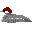
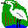
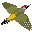
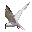
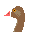

|  |  |
| Home | Recent | Species | Birds | Fish | Mammals | Insects | Fungi | Snaps | Wallpaper | Links | Contact |

2000 sightingsDecember 31st 2000
- Cormorant 27
- Shoveler 1 male
- Pochard 1 female
- Tufted Duck 40
- Teal 28
- Common Gull 2
- Water Rail 1 heard
December 30th 2000
The reservoir is part frozen after several days of cold weather.
- Great Crested Grebe 20
- Cormorant 14
- Grey Heron 2
- Little Egret 1
- Mallard c.400
- Wigeon 1 male
- Teal 32
- Tufted Duck 40
- Common Gull 7
December 29th 2000
- Canada Goose 22
- Teal 15
- Tufted Duck 7
December 28th 2000
- Little Egret 1
December 27th 2000
Smew present for 2nd day.
- Smew 1 redhead
- Teal 10
- Tufted Duck 7
- Shoveler 3
December 26th 2000
Freezing cold northerly winds have brought in a Smew.
- Cormorant 4
- Smew 1 redhead
- Teal 17
- Tufted Duck 4
- Common Gull 1
December 25th 2000
Dave Helliar braved the cold winds on Christmas Day, but was not
rewarded.
He reports 'nothing of interest'.
December 24th 2000
Hide back in action, a good duck day
- Tufted Duck 6
- Pintail 1 pair
- Shoveler 5
- Teal 5
- Coot 14
- Kingfisher 1
December 19th 2000
Hide locked and effectively out of action due to recent flooding. The water level has dropped, but the boardwalk is extremely slippery and dangerous.
- Grey Heron 0 (unusual to see no herons)
- Cormorant 6
December 17th 2000 Sunday
- Great Spotted Woodpecker 5
- Goldfinch 50
December 16th 2000 Saturday
- Water Rail 3 (2 at North end)
- Kingfisher 1
- Mistle Thrush 2 singing
December 13th 2000
Hide entrance under water
December 10th 2000 Sunday
- Pochard 1 male
December 8th 2000
- Pochard 1 pair
December 6th 2000
Sorry updates were delayed this week due to very sick computer
- Kingfisher 1
December 4th 2000
- Tufted Duck 2
- Shoveler 1 male
December 3rd 2000
- Tufted Duck 28
- Goosander 1 female
- Common Gull 1
- Mediterranean Gull 1 adult winter
- Siskin 10
December 2nd 2000
- Great Crested Grebe 48
- Tufted Duck 7
- Goosander 1 female
- Water Rail heard
- Black Headed Gull c.1000
- Lesser Black Backed Gull 6
- Kingfisher 1
November 29th 2000
- Great Crested Grebe 25
- Cormorant 27
- Grey Heron 3
- Tufted Duck 7
- Teal 2 males
- Canada Goose 26
- Green Woodpecker 1
November 28th 2000
- Great Crested Grebe 24
- Cormorant 18
- Grey Heron 4
- Tufted Duck 8
- Mallard 80
- Coot 7
November 27th 2000
- Tufted Duck 29
November 23rd 2000
- Cormorant 22
- Little Egret 1
- Tufted Duck 26
November 20th 2000

It's good to see a Little Egret back again this month
- Grey Heron 1
- Little Egret 1
- Kingfisher 1
- Great Spotted Woodpecker 1
November 18th 2000
- Tufted Duck 27
- Shoveler 1
- Fieldfare 12
November 17th 2000
- Great Crested Grebe 43
- Cormorant 21
- Little Egret 1
- Tufted Duck 1
November 16th 2000
- Great Crested Grebe 32
- Tufted Duck 3
November 14th 2000
- Great Crested Grebe 33
November 13th 2000
- Little Egret 1
- Shoveler 1
November 12th 2000
- Little Egret 1
November 11th 2000
- Tufted Duck 10
- Chiffchaff 1
November 10th 2000
- Tufted Duck 13
- Teal 6
- Common Gull 1
November 8th 2000
- Teal 1
- Kingfisher 1
- Grey Wagtail 1
November 7th 2000
- Goldeneye 1 male
- Wigeon 2
- Water Rail 2
- Common Gull 1
November 6th 2000
It's been difficult to get views of the reservoir from the south end with water levels so high.
- Wigeon 8
- Tufted Duck 3
- Herring Gull 112
November 5th 2000
- Shoveler 3
- Tufted Duck 3
- Teal 3
- Redwing 50
November 1st 2000
The hide has been out of action for a few days due to being under water. Today the water was just lapping the walkway.
You might think that recent storms would bring in odd seabirds, but the only obvious effect at Chard has been to reduce the numbers of usual birds. A few Cormorants clinging to the tops of the just visible branches and a couple of Herons. Lots of water, few birds and no mud at all for waders.
October 29th 2000
There was a lull this morning in the recent high winds and rain, but it came back with a vengeance this afternoon. The water level is quite high now. The Goldcrests are likely to be migrants from Scandinavia, having crossed the North Sea in the last week or so. You have to marvel at these tiny birds.
- Great Crested Grebe 27
- Grey Heron 2
- Mute Swan 1
- Canada Goose 13
- Tufted Duck 13
- Teal 2
- Shoveler 3
- Tawny Owl 1 seen
- Kingfisher 1
- Grey Wagtail 2
- Pied Wagtail 1
- Redwing 5
- Goldcrest c.20
October 26th 2000
- Teal 2
- Shoveler 4
- Buzzard 1
- Grey Wagtail 2
- Pied Wagtail 1
October 24th 2000
- Teal 5
- Shoveler 6
- Tufted Duck 15
- Grey Wagtail 1
- Raven 1
October 23rd 2000
- Shoveler 17
- Tufted Duck 19
- Kingfisher 1
October 21st 2000
- Little Grebe 1
- Shoveler 21
October 19th 2000
- Great Crested Grebe 42
- Shoveler 10
October 16th 2000
- Gadwall 1 male
October 11th 2000
One last quick look before I'm off on holiday sees a surprise pair of Green Woodpeckers in the meadow.
- Green Woodpecker 1 pair

- Great Spotted Woodpecker 1
October 10th 2000
- Shoveler 3
- Teal 2
October 9th 2000
- Shoveler 6
- Tufted Duck 19
October 8th 2000
- Great Crested Grebe 22
- Grey Heron 8
- Tufted Duck 18
- Mallard 250
- Common Sandpiper 1
October 7th 2000
- Tufted Duck 24
- Teal 5
- Shoveler 4
- Common Sandpiper 1
- Grey Wagtail 1
October 6th 2000
- Teal 3
- Tufted Duck 3
- Kingfisher 1
- Buzzard 2
- Grey Wagtail 1
October 5th 2000
- Peregrine 1
- Common Sandpiper 1
- Mediterranean Gull 1 adult winter
- Raven 1 pair
October 4th 2000
It couldn't last I suppose. The bird of the day was Common Sandpiper
- Canada Goose 59
- Shoveler 6
- Tufted Duck 10
- Common Sandpiper 1
October 3rd 2000
Another good day with a Black Tern
at lunchtime and an evening Mediterranean
Gull
- Canada Goose 39
- Shoveler 6
- Teal 3
- Tufted Duck 10
- Mediterranean Gull 1 adult winter
- Black Tern 1 adult winter
- Kingfisher 1
- Grey Wagtail 1
October 2nd 2000
An Osprey was reported again today, late morning and afternoon. The high winds have blown in some unusual birds. Many birds are staying just a short while to refuel on their way south. From the hide, warblers and tits can be seen moving through the bushes on the west bank.
- Mute Swan 2
- Shoveler 9
- Teal 6
- Osprey 1
- Little Gull 1 adult
- Swallows passing through all day
- Cockatiel 1 - Yikes!
October 1st 2000 Sunday
An Osprey was present from
09:42 until 11:00 when it was scared away by two young boys. The Buzzards
were carefully checked as there have been an unprecedented number of
Honey Buzzards in the country in the last few days.
- Mute Swan 3
- Canada Goose 26
- Shoveler 1
- Osprey 1 juvenile
- Buzzard 5
- Kingfisher 2
- Swift 1 - fairly late
- Grey Wagtail 2
September 28th 2000
The water level has risen after recent rain (Less mud for waders).
- Little Grebe 1
- Great Crested Grebe 20 adults 3 Juvs
- Grey Wagtail 1
September 27th 2000
- Great Crested Grebe 3 stripey juvs amongst adults
- Grey Heron 10
- Shoveler 5
- Tufted Duck 11
- Commic Tern 1
- Grey Wagtail 1
- Tit flocks in abundance
September 26th 2000
- Little Grebe 1
- Tufted Duck 11
- Green Sandpiper 1
September 24th 2000 Sunday
Ring-necked Duck male still present over the weekend.
- Little Grebe 1
- Ring-necked Duck 1 male
- Tufted Duck 11
September 23rd 2000
- Ring-necked Duck 1 male
- Teal 16
- Green Sandpiper 2
- Greenshank 1
- Grey Wagtail 3
September 22nd 2000
Late news is that a probable Osprey was seen on 21st August
- Ring-necked Duck 1 male
- Tufted Duck 6+
- Shoveler 3+
- Grey Wagtail 1
September 21st 2000
- Ring-necked Duck 1 male
- Tufted Duck 11
- Shoveler 5
September 20th 2000
The Ring-necked Duck is less obvious now that it has taken to lurking amongst the dead branches on the east bank.
- Ring-necked Duck 1 male
- Tufted Duck 10+
- Kingfisher 1
September 19th 2000
- Ring-necked Duck 1 male
- Tufted Duck 21
- Kingfisher 1
September 18th 2000
The Ring-necked Duck was still
present at 12:30 today. A couple more male Tufted Ducks have
joined the flock to make it more of a challenge to find.
- Ring-necked Duck 1 male
- Tufted Duck 12
- Kingfisher 1
- Grey Wagtail 1
September 17th 2000 Sunday
A drake Ring-necked Duck spent
most of the day at the north end of the reservoir in company with 10
Tufted Duck.
Reported by Dave Helliar and since seen by many. The Bill markings
are the most obvious feature - two very clear white rings around the
bill. If seen in flight watch for the grey wing bar rather than the
white bar of Tufted.
- Grey Heron 11
- Shoveler 3
- Tufted Duck 10
- Ring-necked Duck 1 adult male
- Kingfisher 1
- Grey Wagtail 3
September 15th 2000
Recent rain putting the water levels back up, but still promising
- Teal 3
- Shoveler 4
- Kingfisher 1
September 11th 2000
Great Crested Grebe numbers have nearly doubled overnight.
Most of the grebes are in their winter plumage now.
- Great Crested Grebe 24 adults 1 juv
- Tufted Duck 8
- Common Sandpiper 1
- Kingfisher 1
- House Martin c.120
September 9th 2000
- Shoveler 2
- Buzzard 2
- Common Sandpiper 3
- Great Spotted Woodpecker 1
- Swallow 60
- House Martin 30
- Sand Martin 3
- Grey Wagtail 2
September 8th 2000
- Little grebe 1
- Common Sandpiper 3
- Greenshank 1
- Kingfisher 2
- Grey Wagtail 2
- Siskin 2
September 7th 2000
- Little grebe 1
- Grey Heron 6
- Common Sandpiper 3
- Greenshank 1
- Kingfisher 2
- Grey Wagtail 2
- Siskin 2
September 6th 2000
A drop in the water level has attracted waders to stay
- Shoveler 3
- Mute Swan 1
- Common Sandpiper 4
- Greenshank 1 (DWH)
September 5th 2000
- Teal 2
- Shoveler 2
- Tufted Duck 5
- Common Sandpiper 6
- Kingfisher 1
- Grey Wagtail 2
- Siskin 2
September 3rd 2000 Sunday
- Great Crested Grebe 14 adults, 4 chicks
- Cormorant 12
- Grey Heron 5
- Little Egret 1
- Teal 2
- Canada Goose 1
- Mute Swan 2
- Common Sandpiper 1
- Kingfisher 1
September 1st 2000
- Tufted Duck 1
- Common Sandpiper 1
- Kingfisher 1
August 30th 2000
- Tufted Duck 4
- Kingfisher 1
August 24th 2000
- Tufted Duck 4
- Kingfisher 1
August 23rd 2000
- Common Sandpiper 4
- Kingfisher 1
August 22nd 2000
- Tufted Duck 13
- Common Sandpiper 2
August 16th 2000
- Great Crested Grebe 16 adults, 7 chicks
- Grey Heron 6
- Tufted Duck 4 juveniles
- Canada Goose 1
August 15th 2000
2 pairs of grebes with 3 chicks each plus one older chick and still a bird on the nest.
- Great Crested Grebe 16 adults, 7 chicks
- Grey Heron 6
- Canada Goose 1
- Kingfisher 1
August 14th 2000
- Kingfisher 1

August 11th 2000
The male Scoter seems to have gone today. Apparently 3 young grebes have been seen.
- Great Crested Grebe 8
- Canada Goose 5
- House Martin 60

- Swallow 6
August 10th 2000
At least one pair of grebes has successfully hatched 2 young. They were seen today riding the back of their mother. The male Scoter is still around, but I couldn't see the female.
- Great Crested Grebe 15 including 2 small young
- Grey Heron 7
- Common Scoter 1 male
- House Martin 15
- Swallow 5
August 9th 2000
- Great Crested Grebe 13
- Common Scoter 1 pair
- Kingfisher 2
- House Martin 25
- Swallow 10
August 8th 2000
- Great Crested Grebe 13
- Sparrowhawk 2 (arial food passing again)
- Kingfisher 1
August 4th 2000
- Great Crested Grebe pair still with nest.
- Sparrowhawk 3 equal sized brown birds
- Kingfisher 1
- Sand Martin 12
- Swift 5
August 3rd 2000
- Grey Heron 8
- Sparrowhawk 2
August 2nd 2000
I am fairly sure the juvenile Great Crested Grebe wasn't raised at Chard, but probably arrived with the other new adults seen yesterday.
- Great Crested Grebe pair with nest, also 1 fairly well grown juvenile
- Grey Heron 3
- Sparrowhawk pair passing prey in the air
- Buzzard 2
- Moorhen 3 immatures
August 1st 2000
- Great Crested Grebe 12 including pair with nest
July 2000
Summary
1 pair of Great Crested Grebes first seen on nest on 19th with 4 pairs around. A Little grebe on 26th was welcome. Max Grey Heron count was 12 on 17th. Max Cormorant count was 9.
28th July was good for gull numbers with 167 Black Headed Gulls
and 53 Herring Gulls. Max July Canada Goose count was
30. 2 Bar Headed Geese were present throughout the month. Up
to 3 male Tufted Ducks with a pair on 1st. 9 Pochard
on 24th. 
Common Terns were seen on 3 dates with 2 on 21st.

All 3 Hirundines and Swift seen this month with 60
Sand Martins on 14th. 
2 Kingfishers seen this month.
June 2000
Summary
6 Great Crested Grebes were present. Grey Heron
numbers were low (max 4) as expected at this time of year. The
maximum Cormorants seen was 7.
The usual Canada Geese (max 29) were supplemented by 2 Bar-headed
Geese from the 21st to the end of the month.
These geese proved to be very tame. The only ducks seen
apart from the usual Mallard were one pair of Tufted Duck.
One Common Sandpiper was seen on 30th.
One Kingfisher was present throughout the month.

Small numbers of Swift, Swallow and House Martin
were seen.
Warblers seen included Blackcap, Willow, Chiffchaff
and Reed.
Young of Nuthatch, Treecreeper and Long tailed
Tit were seen.
May 2000
Summary
3 Pairs of Great Crested Grebes on 1st.
Grey Heron maximum of 4.
Mute Swans are an occasional visitor with 2 on 8th and 5
immatures on 15th.
Cormorant numbers were low, averaging just 4.
Tufted Duck max was 6 on 14th and a male Shoveler was
seen on the 4th.
A Lesser White-fronted Goose caused some interest on 18th and
19th, but must be considered an escape at this time of year.

Both Sparrowhawk and Buzzard were seen.
Waders were represented by a single Common Sandpiper on 20th.
One Tern (probably Common) paid a brief visit on 19th
1 or 2 Great Spotted Woodpeckers were present all month
Swift was first seen on May 4th, a day when all 3 hirundines were also present. Swift numbers increased to max of 50 on 19th.
Warblers were well represented with Willow, Chiffchaff, Blackcap, Whitethroat, Sedge and Reed Warlers all reported.
A Cuckoo was heard calling at the north end on several days.
Mistle Thrush is less common than Song Thrush, so I note that one was present in Jim's Field on 19th.
A single male Reed Bunting was seen on the 13th and 14th.
April 2000
Summary
Grey Heron maximum of 3.
2 Mute Swans on 28th. 3 Gadwall on 8th, max of
2 Shovelers on 6th, and max of 5 Tufted Duck on 2nd.

A pale female Kestrel at the south end on 16th.
Common Sandpiper 1 on 8th.
All 3 Hirundines were first seen together on 5th. 80 Sand
Martins on 21st. 


Lesser Spotted Woodpecker possibly heard by the warden on
18th.
2 Green Woodpeckers on 5th.
Small numbers of Chiffchaffs and Blackcaps throughout month.
A small party of Siskins at begining of month and a pair of Reed Buntings on 6th.
March 2000
Summary
One Little Egret seen regularly over the first half of the
month.
A good month for Lesser Black Backed Gulls. Not huge
numbers, but sometimes more Lesser Black Backs than Black Headed
Gulls
Shoveler and Teal both seen this month. Nine or
ten Tufted Duck tucked away at the north end, not so easy to
see or count.
One Snipe seen on the 12th.
Great Spotted Woodpecker seen this month, but not Lesser
Spotted. Keep looking out for it as the coming month is the
favourite time.
 Sand Martins first seen on 21st, with 50 or more on the 27th
and over 100 on 29th and 30th.
Sand Martins first seen on 21st, with 50 or more on the 27th
and over 100 on 29th and 30th.
Peregrine reported on the 15th.
Chiffchaffs seen every day since the 14th. The first one
had a rather strange song see diary.
1 Blackcap on 25th.
A small party of Siskins seen several times.
February 2000
Hot Bird of the month was Male
Lesser Spotted Woodpecker on 17th seen
in the company of 4 Great Spotted Woodpeckers. Also a late
report of another 2 Lesser Spots on 20th 
Little Egret just scraped in this month by appearing late afternoon on 28th. Up to 25 Great Crested Grebes; 29 Cormorants on 14th; 3 male Shoveler on 12th; Teal, Pochard and Tufted Duck all seen; Peregrine on 8th; Water Rail heard; single Kingfisher on several dates; up to 20 Meadow Pipits, small Siskin flock and 2 pairs of Bullfinches.
January 2000
Parts of the reservoir were frozen on 27th and 28th.
Highlight: 4 Goosander on 21st and 3 on 22nd with at least 5 individuals altogether over the 2 days.
Apart from Goosander, other duck seen were Tufted Duck ; Teal ; Wigeon ; Pochard ; Shoveler ; Pintail(2 on 27th) ; Shelduck(2 on 30th) and even a Mandarin Duck(on 18th) sneaking in.
Barnacle Goose and Water Rail on the 13th are noteworthy.
Waders were represented by Oystercatcher and Snipe (plus 100 Lapwing flying over on 29th).
Meadow Pipits were seen in the meadows throughout January with 15 on the 9th.
Reed Buntings were present for most of the month
4 Ravens on 18th.
January Maximums
| Great Crested Grebe | 30 | on 13th |
| Little Egret | 2 | on 23rd |
| Grey Heron | 17 | on 22nd |
| Cormorant | 49 | on 30th |
| Teal | 29 | on 27th |
| Tufted Duck | 13 | on 27th |
| Canada Goose | 49 | on 29th and 30th |
| Coot | 26 | on 13th |
| Black Headed Gull | 300 | on 14th |
| Wood Pigeon | 50 | on 29th |